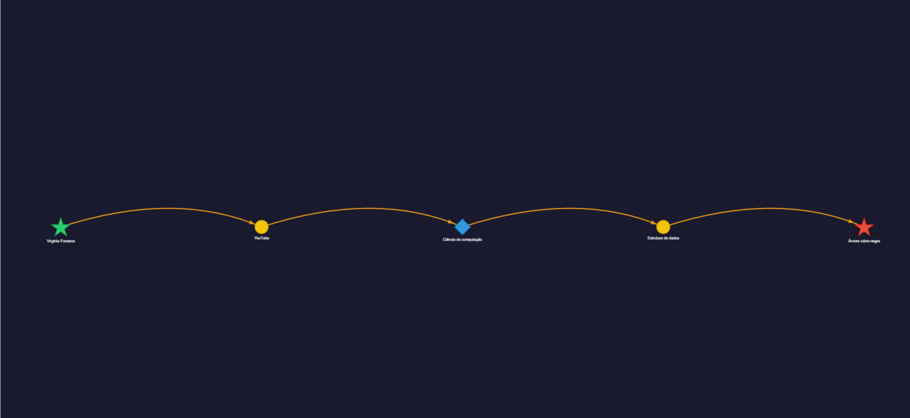
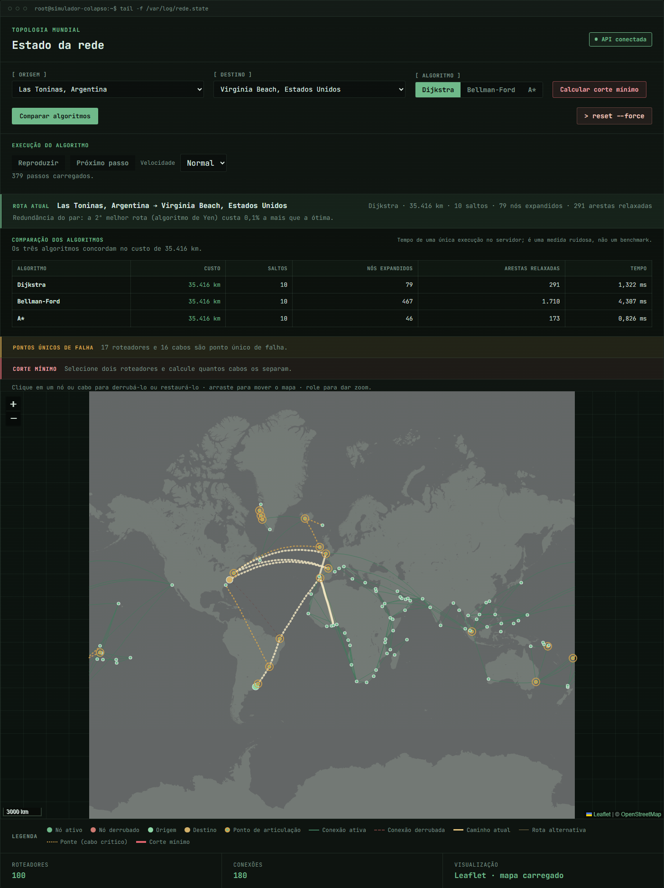

macro F1 in blood cell
classification
Available for internships
I turn data into
intelligent decisions.
I'm Gustavo, a Software Engineering student at the University of Brasília. I build solutions at the intersection of Artificial Intelligence, Data, and Software — from hypothesis to working product.
ai_pipeline.py
completed
best result
98.19%
F1 macro
ResNet18 · BloodMNIST
faster CoOps
data extraction
fixed overhead measured
in the Hindsight experiment
Selected work
Projects built with method,
code, and results.
Academic experiments and team products connecting research, engineering, and visual communication.
7 projects
01
Applied AI · Computer vision
Blood cell classification
A reproducible study comparing logistic regression, a compact CNN, and ResNet18 with transfer learning on BloodMNIST.
Result
ResNet18 achieved a 98.19% macro F1 score. The CNN reached 97.61% with only 2.6% of the parameters, highlighting the models' performance-efficiency trade-off.
My role: reproducible pipeline, compact CNN implementation, methodology, and automated result generation.
GitHub · code and paper
Macro F1 · test
3 seeds
17,092 images
8 classes
Tesla T4
02Data · Generative AI
CoOps
A platform that turns GitHub activity into collaboration metrics, interactive visualizations, and AI-generated explanations.
Impact: Medallion pipeline and data extraction optimized from 4h to 30s.
My role: extraction optimization, support for 90+ languages, automated testing, and CI.
03Agents · Observability
Hindsight
A local tool that analyzes coding-agent sessions, identifies context waste, and generates improved configurations with A/B validation.
Result: 19.7% lower API cost and 25.9% less fixed overhead.
My role: tool-call extraction and deterministic recommendations to reduce overhead.
04
Academic paper · Responsible AI
AI and misinformation: public health and elections
A paper investigating how AI changes the production, circulation, and impact of misinformation in vaccination campaigns and electoral processes.
Contribution: compares empirical evidence, international reports, and documented incidents without conflating technical capability with causality.
My role: sole authorship, literature review, evidence matrix, and critical analysis of the sociotechnical chain.

shortest path · Wikipedia05Algorithms · Graphs
Wikirace with bidirectional BFS
An explorer that finds the shortest click path between two Wikipedia articles in real time and turns the search into a navigable graph.
Engineering: asynchronous batched requests, in-memory cache, global 429 handling, and interactive visualization.
My role: bidirectional search engine, NetworkX/Pyvis rendering, batching, rate limiting, and testing.

100 nodes · 180 edges06Algorithms · Network resilience
Internet collapse simulator
An interactive global network that recalculates routes when cables or connection points fail and compares Dijkstra, Bellman-Ford, and A* under the same scenario.
Analysis: shortest paths, minimum cuts, articulation points, and resilience curves under progressive failures.
My role: weighted graph, Dijkstra, simulation engine, global dataset, Leaflet interface, and benchmarks.
07Compilers · Systems
Crusty — a C compiler in Rust
A compiler for a meaningful subset of C, with a complete pipeline from lexical analysis to native x86-64 ELF executable generation.
Scope: Pratt parser, semantic analysis, TAC IR, six optimization techniques, and a System V ABI backend.
My role: semantic validation, function prototypes, fixed-size arrays in the IR, and constant folding, propagation, and DCE passes.
View compiler ↗About me
Curiosity to investigate.
Discipline to deliver.
I like to understand the problem before choosing the technology. My work combines reproducible experimentation, data pipelines, and interfaces that make complex results easier to interpret.
As a Software Engineering undergraduate at the University of Brasília, I have been deepening my foundations in AI, machine learning, data engineering, and collaborative product development. I am looking for an internship where I can learn quickly and contribute to real-world deliverables.
Reproducibility
Code, data, and metrics should tell the same story.
Measurable impact
A clear result matters more than a list of tools.
Collaboration
Documentation and communication are part of engineering.
Tools I use to build
Languages
Python · SQL · TypeScript · C · Rust
AI & Data
PyTorch · Pandas · Scikit-learn · D3.js
Engineering
Git · GitHub Actions · Docker · Testing
Next step
Have an interesting problem
to solve?
I am open to internship opportunities in AI, Data, and Software Engineering.
Get in touch